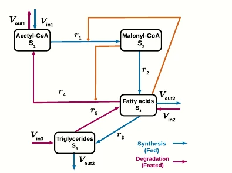
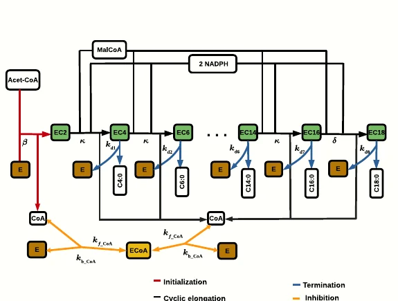

ODE
Continuous dynamics
Open systems of differential equations, phase portraits, parameter sweeps and Python export in the ODE Lab.
Visual guide
Choose a model category, then open the matching lab. ODE models open in the ODE Lab, optimization problems open in the optimization mode of the ODE Lab, and random-event models open in the Stochastic Lab.
ODE
Open systems of differential equations, phase portraits, parameter sweeps and Python export in the ODE Lab.
Optimization
Open constrained objectives, fitting examples and Pareto views in the optimization mode of the ODE Lab.
Stochastic
Open CTMCs, branching processes, random walks, SDEs and decision models in the Stochastic Lab.

Core ODE
Predator–prey oscillator. The key lesson is how interaction terms create cycles in a phase portrait.
Variables: prey x; predator y
Try: increase predation β or predator death γ
Open in ODE Lab
Core ODE
A canonical three-state chaotic system. Small changes in parameters or initial conditions can reshape long-term trajectories.
Variables: x, y, z convection/temperature modes
Try: change ρ near 24–30 and inspect 3D view
Open in ODE Lab
Core ODE
Compartmental epidemic model with susceptible, infected, and recovered states.
Variables: S, I, R
Try: increase β or γ and watch the infection peak
Open in ODE LabCore ODE
Adds an exposed compartment before infectiousness, making incubation explicit.
Variables: S, E, I, R
Try: change σ to shorten or lengthen incubation
Open in ODE LabStiff ODE benchmark
Classic stiff reaction system. It is included to show why explicit browser solvers have limits.
Variables: A, B, C
Try: export Python and compare Radau/BDF for reliability
Open in ODE Lab
Core ODE
Minimal saturating conversion from substrate to product.
Variables: S, P
Try: change Km and vmax to see saturation
Open in ODE Lab
Core ODE
Self-sustained nonlinear oscillator with a limit cycle. Large μ creates stiffness.
Variables: x position; v velocity
Try: increase μ and compare phase portrait shapes
Open in ODE Lab
Research ODE
Coarse-grained PhD-inspired fatty-acid metabolism model connecting acetyl-CoA, malonyl-CoA, fatty acids, and triglycerides with feedback.
Variables: S1 acetyl-CoA; S2 malonyl-CoA; S3 fatty acids; S4 triglycerides
Try: inspect fatty-acid pool feedback and possible switching behavior
Open in ODE Lab
Research ODE
Refined PhD model: FAS elongation with CoA-driven enzyme sequestration.
Variables: AcetCoA, MalCoA, NADPH, CoA, E/ECoA, EC2–EC18, C14/C16/C18
Try: watch C16 production and ECoA sequestration
Open in ODE Lab
Teaching ODE
Two-person social oscillator. It is mathematically simple but intuitively memorable.
Variables: R Romeo; J Juliet
Try: change a and b to alter oscillation speed
Open in ODE Lab
Paradox / network dynamics
Route-choice dynamics inspired by the paradox that extra capacity can worsen collective outcomes under selfish routing.
Variables: x fraction using a route
Try: compare route equilibrium with and without shortcut incentive
Open in ODE LabParadox / structural dynamics
Non-conservative follower-force model where added stiffness or load can destabilize instead of stabilizing.
Variables: q1, q2, v1, v2
Try: increase follower load P and inspect oscillation growth
Open in ODE Lab
Photosynthesis ODE
Reduced two-pool photosynthesis model tracking PGA and RuBP with carboxylation, oxygenation, and regeneration.
Variables: PGA, RuBP
Try: increase regeneration Vregen or oxygenation Vo
Open in ODE LabOptimization example
L1 regularization creates diamond-shaped constraints, so the optimum often lands exactly on an axis and sets coefficients to zero.
Variables: w1, w2 coefficients
Try: compare L1 sparsity geometry to smooth shrinkage
Open in ODE LabOptimization / fitting example
More polynomial flexibility can make edge oscillations worse, not better.
Variables: polynomial coefficients
Try: inspect how high-degree fitting overreacts near boundaries
Open in ODE LabDecision example
Reject the first 1/e of candidates as a benchmark, then choose the first candidate better than all previous.
Variables: candidate rank sequence
Try: compare the 37% rule with naive early selection
Open in Stochastic LabOptimization example
Two competing objectives. The useful output is the non-dominated frontier, not a single best point.
Variables: x, y design coordinates
Try: run optimization, then select Pareto frontier or feasibility map
Open in ODE LabEvent simulation engine
Simulates reaction networks one event at a time: draw the waiting time, choose the next reaction, update the state.
Variables: integer molecule, cell, or compartment counts
Try: compare one stochastic path against the deterministic ODE mean field
Open in Stochastic LabBranching process
Each individual independently produces a random number of descendants. Mean growth above one does not guarantee survival.
Variables: population size Zₙ by generation
Try: vary offspring variance while keeping the same mean
Open in Stochastic LabRandom walk
A finite player repeatedly wins or loses one unit. In a fair game against an infinite bankroll, eventual ruin is almost sure.
Variables: capital Xₜ; win probability p
Try: increase initial capital and observe that risk is delayed, not removed
Open in Stochastic LabStochastic epidemic
Transmission and recovery are random events. Even when R₀ is above one, early random extinction remains possible.
Variables: S, I, R integer counts
Try: run many paths and inspect final-size distribution
Open in Stochastic LabStatistical physics
Balls randomly switch urns. The system approaches equilibrium yet can eventually return to an extreme initial state.
Variables: number of balls in urn A
Try: compare short-time relaxation with long-time recurrence
Open in Stochastic LabPopulation genetics
Allele frequencies change by random sampling. Neutral variants eventually fix or disappear without selection.
Variables: allele frequency pₙ; population size N
Try: reduce N and watch drift dominate faster
Open in Stochastic LabSDE / finance
Multiplicative noise separates ensemble average from typical trajectory. High volatility can make most paths disappointing while the mean rises.
Variables: asset or population size Xₜ
Try: increase volatility and compare median vs mean
Open in Stochastic LabParadox / random walks
Two losing games can combine into a winning process when switching changes the state distribution.
Variables: capital; modulo state
Try: alternate games instead of playing either one alone
Open in Stochastic LabNoise-assisted signal
Adding noise can improve detection of a weak periodic signal when a threshold system is tuned correctly.
Variables: signal, noise amplitude, threshold
Try: scan noise level and find the best signal response
Open in Stochastic LabBrownian motor
Thermal noise plus asymmetric switching can produce directed transport without a constant macroscopic force.
Variables: particle position; potential state
Try: switch the potential on/off and measure net velocity
Open in Stochastic LabLearning / control
Optimal decisions may favor an uncertain option over the current best-looking option because information has future value.
Variables: arm beliefs; reward history
Try: compare greedy choice against exploration-aware policies
Open in Stochastic LabOptimal stopping
Rejecting good early offers can be rational when waiting preserves the option of rare high-quality future draws.
Variables: offer sequence; stopping threshold
Try: change search cost and market variance
Open in Stochastic LabResearch stochastic biology
CFSE-motivated immune-cell model family: ODE/DDE, Cyton, branching, individual simulation, and master-equation views.
Variables: generation counts Nᵢ; quiescent Qᵢ; activated Aᵢ
Try: compare deterministic generation means with stochastic cell-event paths
Open in Stochastic LabUse the atlas to choose a category first. ODE and optimization examples open in the ODE Lab; stochastic examples open in the Stochastic Lab.
Boundary: stochastic and paradox examples now open in the Stochastic Lab. It is a browser-scale teaching simulator; for calibrated fitting, stiff systems, large Monte Carlo, stochastic control, or publication analysis, export Python.